User guide
Family Grocery keeps one shared list, sorted into the order you'd walk each store's aisles — so nothing sends you back to produce after you've already reached the checkout. This guide covers every screen, every icon, and what each badge on screen actually means.
There's no sign-up. One shared password unlocks the whole household's list.
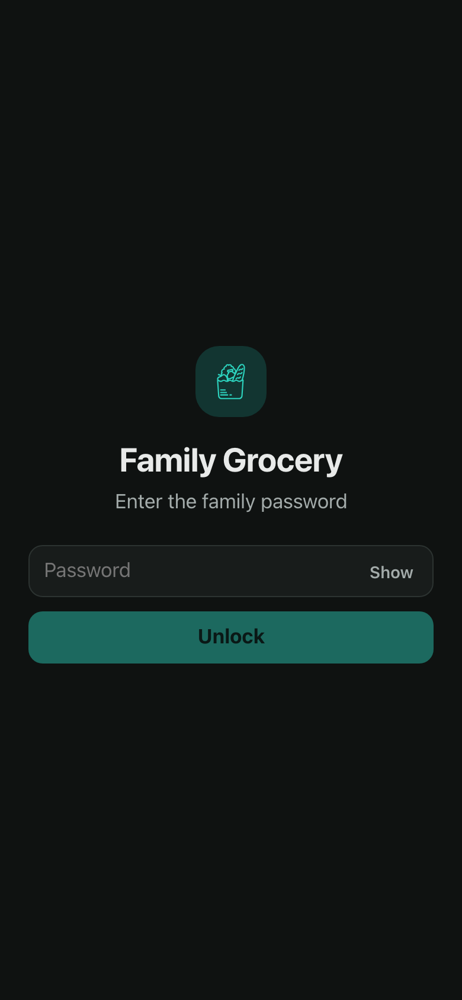
You land on Shop. The app now works from data stored on your device — closing the browser, losing signal, or going offline doesn't lose anything. Add it to your Home Screen for the full app-like feel (see Settings), or just keep using it as a normal browser tab — both work identically.
Everything lives behind four tabs, always reachable at the bottom of the screen.
This is the screen you actually use standing in the aisle. Nothing here is for adding items — that happens on Products. Shop is purely the ordered checklist.
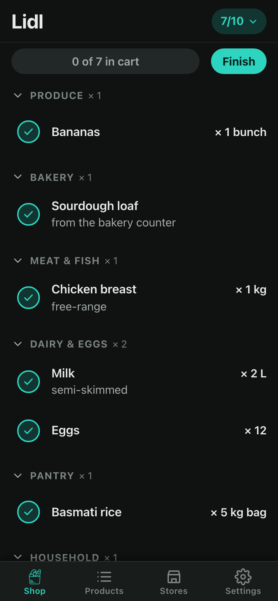
Finish ends the trip.×1 / ×2 after each name is how many items are in that group.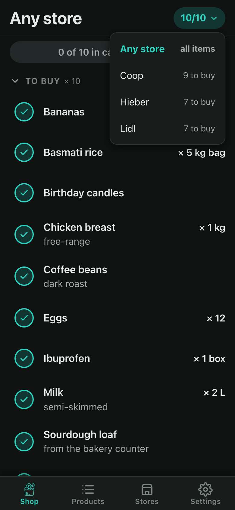
Remove action — removes it from today's list entirely (not from the catalog). Undo toast follows.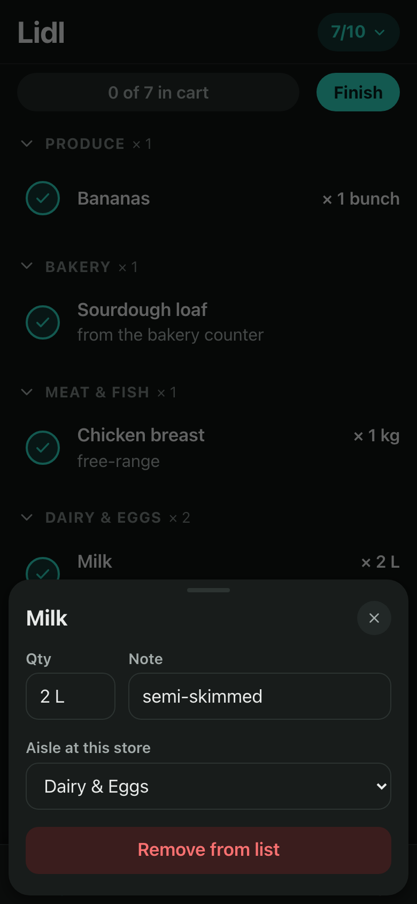
Your master catalog. This is where you add new items, and where you decide which stores/aisles sell each one. This screen looks and behaves differently depending on whether a store is selected.
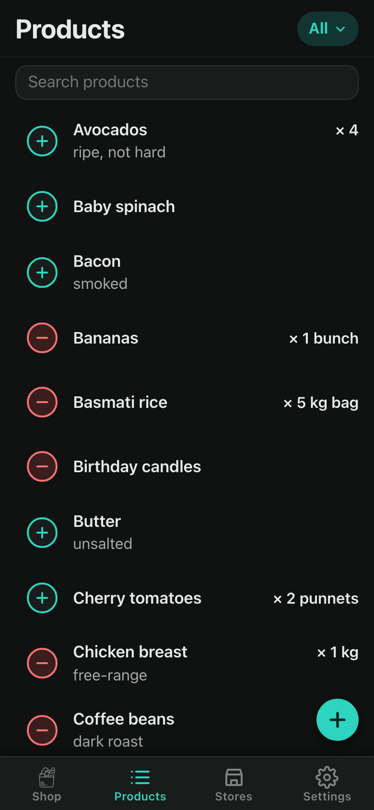
Products placed at that store appear grouped under their aisle name, in the order you'll walk them. Drag any row by its grip (the dots on the right) to reorder it within its aisle, or move it to a different aisle via the item's own sheet. This view is the one place that actually sets the walking order used on Shop.
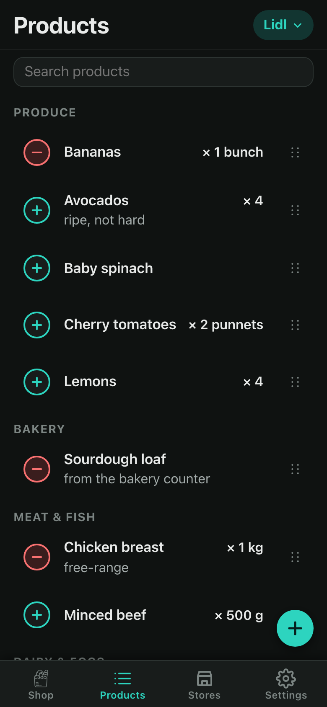
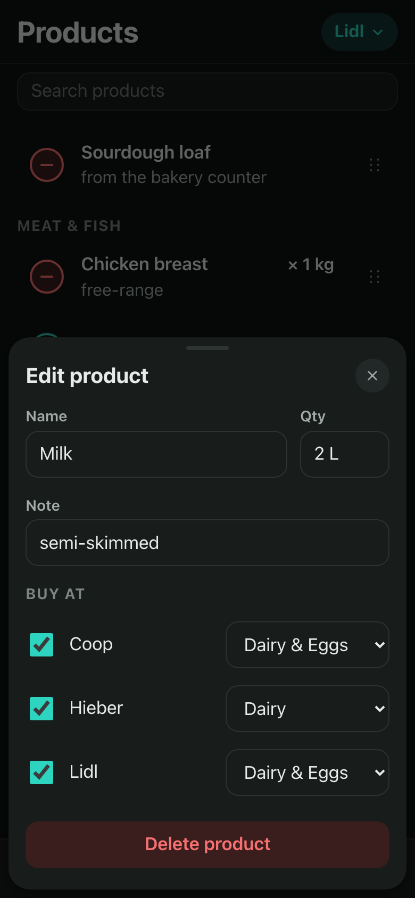
Unsorted).Add the shops you visit, then teach the app how you walk each one.
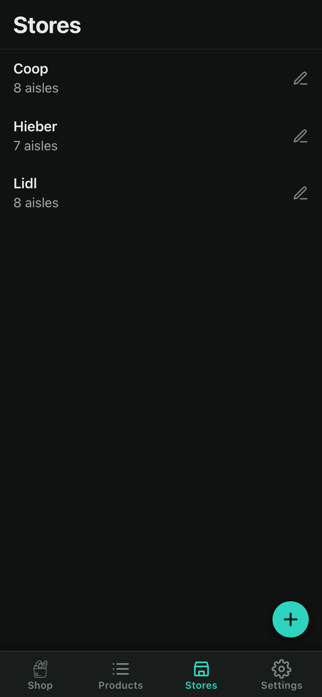
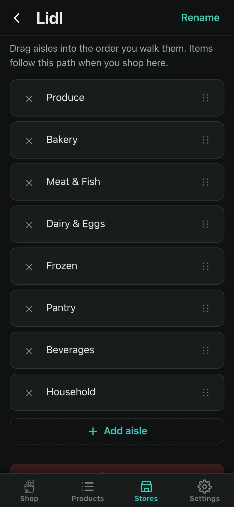
Tap an aisle's × to delete it — its products fall back to "Unsorted" at this store rather than disappearing.
Reached via the 4th tab (gear icon). Grouped into sections, top to bottom:
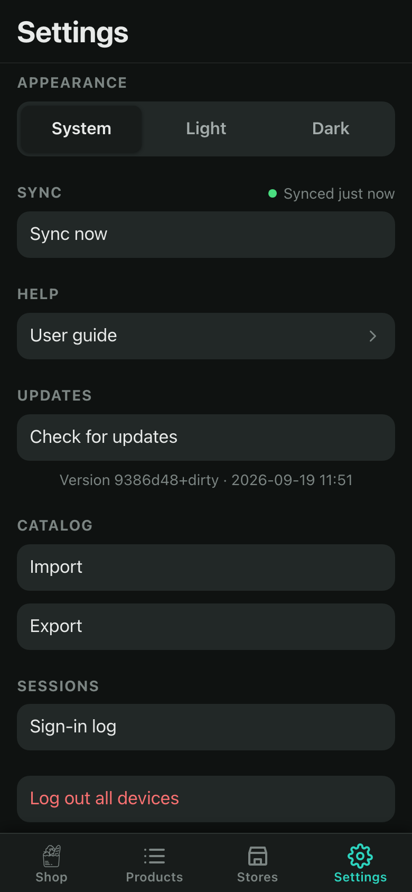
Sync now button. See the badge meanings below.User guide opens this very page.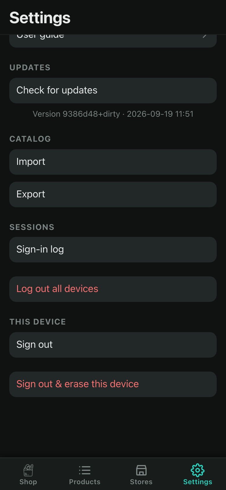
Import / Export — see "Catalog: import & export" below.Sign-in log shows recent unlock attempts; Log out all devices revokes every session at once — every device, this one included, needs the password again after.Sign out keeps your local data; Sign out & erase also wipes this device's copy (the shared data on the server is untouched).Not pictured: an Install section appears above Catalog, but only when your browser is ready to offer it — see the FAQ below.
The same colored dot also appears as a small pill in the header on Shop/Products/Stores whenever there's something worth flagging — synced and idle stays quiet, but "Syncing…," "Offline," or a pending-changes count shows up next to the gear icon.
Check for updates asks the server which version is live without reloading anything first, so you know before you commit to it:
New version available — tap to install. Tapping it clears this device's cache and reloads, then confirms with "Updated ✓" once the new version is actually running.The version string underneath (e.g. 4b3e315 · 2026-09-18 18:51) is what's currently running on this device — the code revision and when it was built.
Settings → Catalog has two buttons:
name, qty, note. Existing stores and products are matched by name, so importing twice doesn't create duplicates.You don't have to type every product by hand — ChatGPT, Claude, or any AI assistant can write the import JSON for you. Give it a prompt like this:
Write JSON matching exactly this shape, with no other text in your reply:
{
"stores": [{ "name": "string", "aisles": ["string", "..."] }],
"products": [
{
"name": "string",
"qty": "string, optional",
"note": "string, optional",
"needed": true,
"stores": ["Store name", "Store name: Aisle name"]
}
]
}
My stores and aisles: Lidl (Produce, Bakery, Dairy, Frozen), Costco (Dry
goods, Fridge wall). Generate 25 common household grocery items, placed in
the store and aisle where each is normally found. Mark milk, eggs, and bread
as needed.
Paste the reply into Settings → Catalog → Import — with or without Replace, as above. Imports are capped at 2,000 items at a time.
Your browser has to confirm the app is installable before it offers the option, and that check sometimes only completes on a second load — reloading the page (or just revisiting it later) is usually all it takes for the option to appear in Settings.
It's hidden by design, so the list only shows what's left. Tap the eye icon in the status bar to bring bought items back into view, struck through, at the bottom of their aisle.
Yes — the item sheet on Shop lets you override the quantity or note just for this trip, without changing the catalog's default.
Nothing permanent right away — an 8-second Undo toast appears immediately after, restoring the exact list you had before.
Yes, fully. Every screen reads and writes to the device first; changes queue up and sync automatically the moment a connection comes back.
The most recent change to a given item wins. Two people reordering the very same aisle at the same time while both offline can occasionally interleave oddly — reopening the app straightens it out automatically.